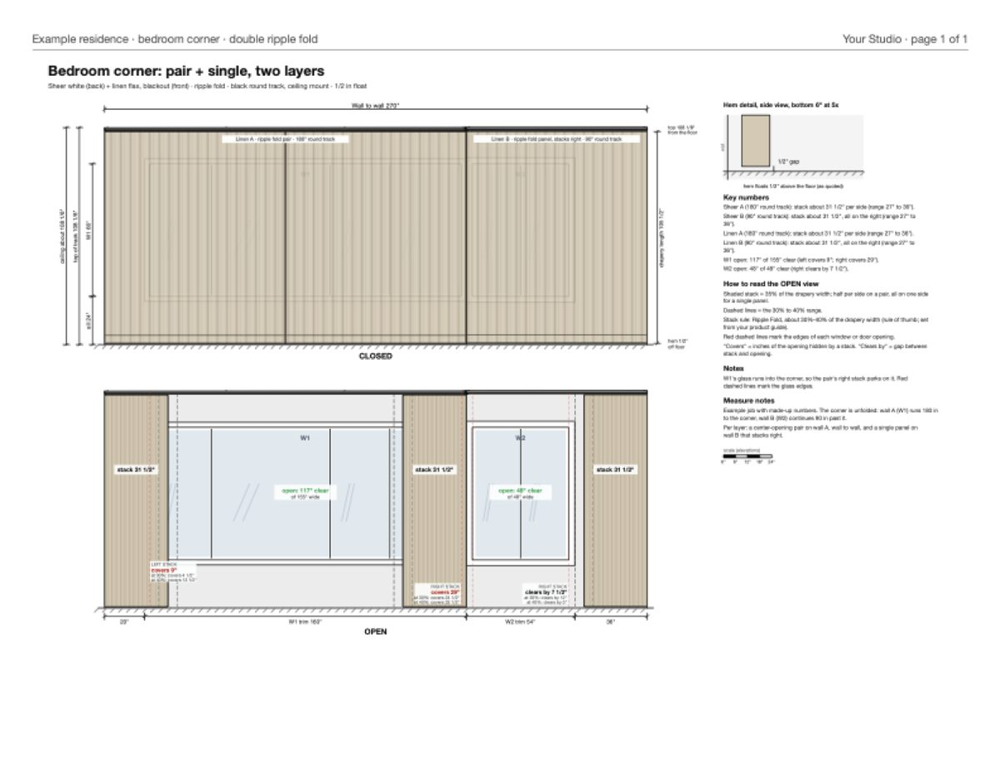

Give an AI assistant a measure worksheet and it draws the wall to scale, with the drapery or shades closed and open, every clearance called out in inches.
Role
Designed and built it
Status
In use on my own projects
Works with
Claude, Copilot, other agents

Example sheet with made-up numbers: a bedroom corner unfolded into one wall, two layers of drapery, closed (top) and open (bottom).
The problem
Clients buying drapery or large shades always ask the same questions: where does the fabric stack when it's open, how much of the window does it cover, and how far past the trim does the hardware run? A photo render can't answer those. It looks nice but isn't to scale, so it can quietly promise something the product won't do.
The answer usually lived in my head or on a hand sketch, which meant clients had to take my word for it.
What I built
A packaged skill for AI coding assistants that turns measurements into a one-page, to-scale elevation. It draws each wall twice, closed and open, and labels the numbers that settle the decision: stack width, how much glass each stack covers or clears, hardware height and how far the hem floats off the floor. Output is a drawing, a web page and a printable PDF.
How it works
Type in what was measured: wall width, ceiling, each opening's size and position, and the treatment on it.
The generator draws everything at 1 unit = 1 inch, so nothing is eyeballed.
It prints flags for anything that looks wrong, like a stack landing on glass or hardware hitting the ceiling.
The assistant reads the flags, fixes the input if needed, and hands over the PDF.
For homeowners, a second template produces a cleaner client-facing version.
Decisions that mattered
Fix the input, not the drawing. If a number is wrong, it gets corrected at the source, so the drawing is always a faithful picture of the measurements.
No company data in the tool. Built-in product sizes are typical estimates. Real product specs go in each job's own file, so the tool can be shared without exposing anyone's catalog.
Plain tools. Python's standard library only, so it runs on any machine and any AI assistant can use it.
Result
Clients see exactly where the drapery lands before they buy, and the question "will it block my window?" gets answered with a drawing instead of a promise.